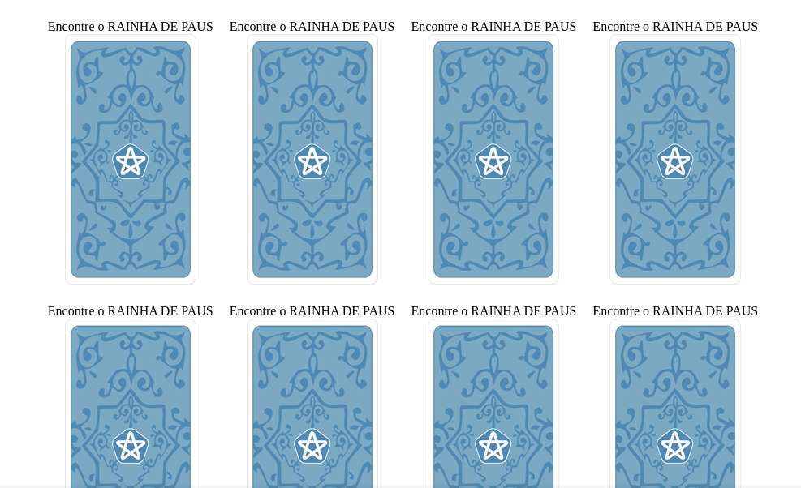
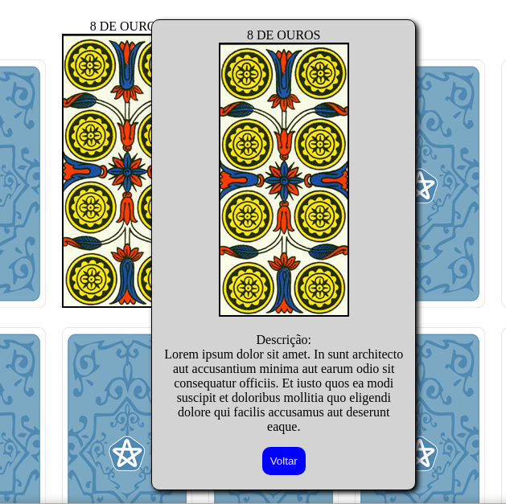
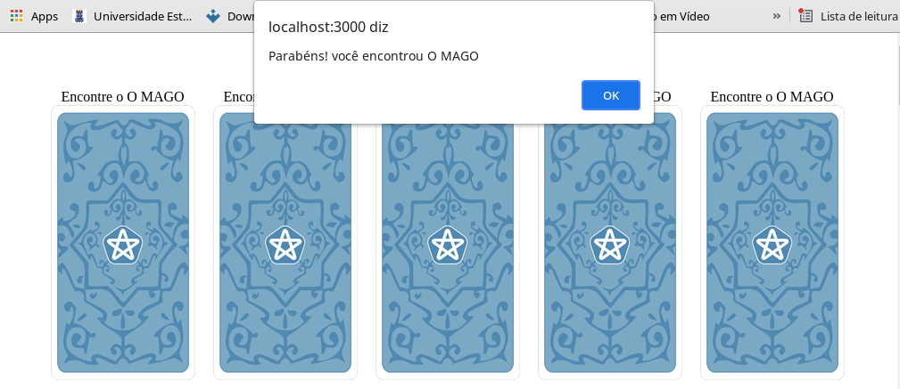
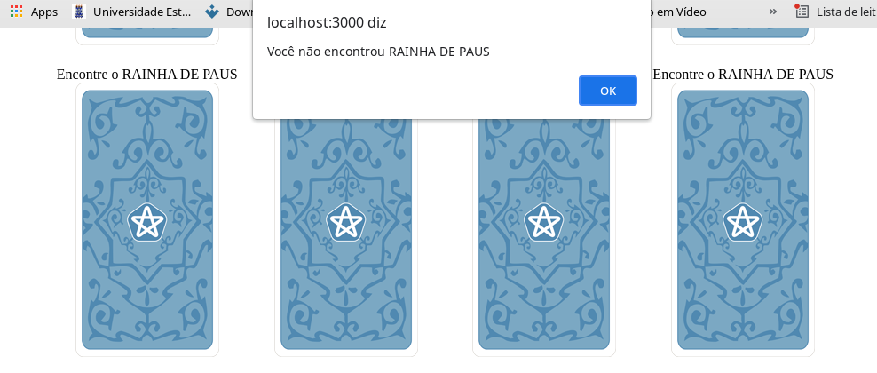

- Página incial:
- Cartas viradas: 
- Conclusão: 

Aqui é onde tudo começa, com todas as cartas e seus conteudos expostos. Clicando no botão jogar você é redirecionado para uma página onde todas elas estão viradas e seus nomes e conteudos não estão visíveis.
Ao clicar em jogar a ordem anterior e a disposição das cartas é embaralhada e uma carta específica é escolhida aleatoriamente para que você possa encontrá-la. O nome dessa carta virá acima de cada uma das cartas viradas. Se a carta clicada for a que foi escolhida aleatoriamente, haverá um alerta de que você encontrou a carta(Obs.: Houve um pequeno bug nessa parte, pois o alerta de vitória ou derrota aparece uma seguna vez quando se clica em OK, no entanto isso não chega a constituir nenhuma espécie de loop). E se a carta clicada não for a mencionada aleatoriamente a mensagem será de que você não encontrou a carta.
 Após ocorrido todo esse processo o popup com a descrição e o nome da carta é mostrado na tela. Esse popup aparecerá independentemente de você ter encontrado ou não a carta aleatória. Pois esse popup se trata dos detalhes de cada uma das cartas viradas.